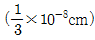
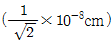
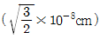
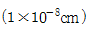
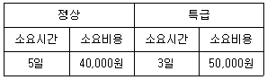
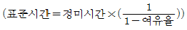
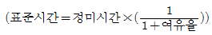

금속재료기능장 (2006-04-02 기출문제)
1과목: 임의 구분
1. 다음 중 융점이 가장 높은 금속은?
- Mo
- W
- Fe
- Cr
(정답률: 82%)

2. 내력은 어떻게 표시 되는가?
- 0.1%의 최대 강도에 대한 응력값
- 0.2%의 영구 변형에 대한 응력값
- 비례한도와 같은 응력값
- 영구 변형이 일어나는 최소 응력값
(정답률: 79%)
3. 퓨즈가 끊어져 다시 끼웠을 때 또 다시 끊여졌을 경우 그 대처방법으로 옳은 것은?
- 굵은 동선으로 바꾸어 교체한다.
- 가는 동선으로 교체한다.
- 다시 한번 교체한다.
- 기계에 인입되는 전선의 단락 여부를 검사한다.
(정답률: 82%)
4. 죠미니 시험(J0miny Test)으로 알수 있는 성질은?
- 경화능
- 자경성
- 인성
- 탈탄
(정답률: 77%)
5. 다음 중 피로시험 결과에 영향을 주는 요인이 아닌 것은?
- 시편 형상
- 가공방법
- 표면색깔
- 열처리 상태
(정답률: 89%)
6. 다음 중 동적시험에 속하는 재료시험은?
- 인장시험
- 압축시험
- 충격시험
- 비틀림시험
(정답률: 72%)
7. 담금질 균열의 발생 방지 방법 중 틀린 것은?
- 비금속 개재물 및 편석이 적은 재료를 선택한다.
- 모서리의 샤프 코너는 둥글게 설계한다.
- 항온변태 곡선의 코(nose)까지의 서냉과 Ms점 이하에서 급냉을 한다.
- 담금질 직후에 뜨임을 한다.
(정답률: 72%)
8. 금속의 변태점을 측정하는 방법으로 틀린 것은?
- 열 분석법
- 열 팽창법
- 전지저항법
- 형광검사법
(정답률: 85%)
9. 열처리 후 잔류 오스테나이트 상이 존재할 경우 일어나는 현상 중 맞는 것은?
- Ti, Al 이 많이 첨가되면 잔류 오스테나이트 상의 생성량이 증가하며 V가 첨가되면 오히려 감소한다.
- Ti, Al, V 이 많이 첨가되면 잔류 오스테나이트 상의 생성량이 감소한다.
- 경년변화에 영향을 주지 않는다.
- 재 담금질 처리로 완전히 제거할 수 있다.
(정답률: 47%)
10. 금속 결정의 응고와 형성과정에 관한 설명 중 틀린 것은?
- 고온의 용융금속이 냉각하여 응고점에 도달하면 응체내의 여러 곳에서 극히 미세한 결정의 핵이 생긴다.
- 생성된 결정핵은 나뭇가지 모양으로 발달한다
- 결정의 형성순서는 핵 발생→핵의 성장→결정경계형성으로 된다.
- 순금속의 단결정은 반드시 괴상 또는 단면체 조직을 형성한다.
(정답률: 72%)
11. 구리 및 구리 합금에 대한 설명 중 틀린 것은?
- 황동은 Cu-Zn계 합금이다.
- Naval brass는 7-3 황동에 Sn을 소량 첨가한 합금이다.
- 인청동은 탄성과 내식성 및 내마모성이 크다.
- Kelmel은 Cu-Pb계 합금이다.
(정답률: 75%)
12. 직경 50mm 인 원통형의 시험체를 자분탐상 시험할 때 원주방향의 결함검출에 가장 적합한 자화방법은?
- 축 침투법
- 습식 유화법
- 코일법
- 분무 노즐법
(정답률: 73%)
13. 재료에 일정한 하중을 가하고 일정한 온도에서 긴 시간 동안 유지하면 시간이 경과함에 따라 변형량이 증가하는 것은?
- 피로
- 연신
- 크리프
- 인장연율
(정답률: 77%)
14. 시각에 나타나는 영상의 명료도의 판독성을 좋게 하는데 가장 크게 영향을 미치는 것은?
- 순도 차를 크게 한다.
- 명도 차를 크게 한다.
- 색상 차를 크게 한다.
- 채도 차를 크게 한다.
(정답률: 64%)
15. 주조경질합금으로 주조한 상태로 사용하는 스텔라이트(stellite)의 주성분이 아닌 것은?
- W
- V
- Co
- Cr
(정답률: 73%)
16. 강종 판정시험의 하나인 불꽃시험(spark test) 통칙에 대한 설명 중 틀린 것은?
- 0.2% 탄소강의 불꽃 길이가 500mm 정도 되게 압력을 가한다.
- 시험하는 시험편에 탈탄층, 질화층 및 침탄층 등은 없어야 한다.
- 시험장소는 직사광이 닿지 않는 적당히 어두운 실내가 좋다.
- 불꽃은 수직 또는 경사진 아랫 방향으로 날리도록 하는 것이 좋다.
(정답률: 47%)
17. 누설시험의 설명으로 틀린 것은?
- 압력용기나 부품 등의 관통 균열 여부를 검사한다.
- 버블법, 시니퍼법, 후드법 등이 있다.
- 가스는 CO, H2 등을 사용한다.
- 시험재의 검사 부분은 깨끗이 닦은 후 건조한다.
(정답률: 89%)
18. 강의 결정입자를 미세하게 하고 재질을 조정하여 강의 점인성을 실질적으로 향상시키는 조작법은?
- 조질철
- 재결정
- 취성경화
- 구상화처리
(정답률: 67%)
19. 주철의 구상화처리 접종제로 주로 많이 쓰이는 것은?
- Fe-Si
- Cr-Si
- Fe-S
- Fe-P
(정답률: 72%)
20. 열전대에 사용되는 재료가 갖는 특성으로 틀린 것은?
- 내열, 내식성이 뛰어나고 고온에서도 기계적 강도가 커야 한다.
- 히스테리시스 손이 커야 한다.
- 열기전력이 크고 안전성이 있어야 한다.
- 제작이 쉽고 호환성이 있어야 한다.
(정답률: 85%)
2과목: 임의 구분
21. 읽고 쓰기가 가능한 메모리 형태의 표시로 맞는 것은?
- CLO
- RAM
- PLM
- EEROM
(정답률: 72%)
22. 다음 중 금속재료의 강화기구가 아닌 것은
- 용해
- 입계강화
- 석출강화
- 가공강화
(정답률: 87%)
23. 18-8 스테인리스강을 1,100℃에서 30분간 유지한 후 물에서 냉각한 조직명은?
- 페라이트
- 마텐자이트
- 시멘타이트
- 오스테나이트
(정답률: 79%)
24. 다음 중 현재 실용화 되고 있는 방사선 동위원소가 아닌 것은?
- 192Ir
- 137Cs
- 75He
- 170Tm
(정답률: 65%)
25. 초음파의 주파수를 결정하는 것은?
- 펄스 전압
- 수신 전압
- 진동자 두께
- 탐촉자 크기
(정답률: 43%)
26. 침투탐상 시험에서 결함지시 모양으로 틀린 것은?
- 갈라짐에 의한 침투지시 모양
- 정방향의 침투지시 모양
- 전장 침투지시 모양
- 원형상 침투지시 모양
(정답률: 71%)
27. 다음 중 표면 경화법이 아닌 것은?
- 물 담금질(water quenching)
- 화염 경화법(flame hardening)
- 쇼트피이닝(shprt peening)
- 고주파 경화법(high-frequency hardening)
(정답률: 58%)
28. 침탄 처리 후 2회의 담금질 중 2차 담금질의 목적은?
- 중심부의 조직을 미세화하기 위하여
- 표면부의 조직을 미세화하기 위하여
- 중심부의 Martensite를 안정화 시키기 위하여
- 표면부의 Martensite를 Austenite화 하기 위하여
(정답률: 67%)
29. 알루미늄 청동에서 일어나는 취성의 형태는?
- 475℃ 취성
- 적열 취성
- 저온 취성
- 서냉 취성
(정답률: 47%)
30. 영욕 열처리법에서 영이 구비해야 할 조건 중 틀린 것은?
- 염은 불순물이 크고 순도가 높아야 한다.
- 흡습성 또는 조해서이 없어야 한다
- 고온에서 증발 및 휘발성이 적어야 한다
- 고온에서 점성이 커야 한다.
(정답률: 54%)
31. 강 중에 있는 원소로서 고온취성의 주 원인이 되는 것은?
- S
- P
- Mn
- Ni
(정답률: 65%)
32. Fe-C계에서 Si이 미치는 영향을 설명한 것 중 맞는 것은?
- 공정점은 Si 증가에 따라 고탄소(高炭素) 축으로 이동한다.
- 공정, 공석온도는 Si 증가에 따라 감소한다.
- 오스테나이트에 대한 C 용해도는 Si 증가에 따라 증가한다.
- 오스테나이트에 대한 C 용해도는 Si 증가에 따라 감소한다.
(정답률: 69%)
33. 대면각이 136°인 다이아몬드 사각추 누르개를 시험편 표면에 압입시켜 생긴 자국의 표면적으로부터 경도를 구하는 경도계는?
- 로크웰 경도계
- 브르넬 경도계
- 쇼오 경도계
- 비커즈 경도계
(정답률: 77%)
34. 재료의 인장시험에서 원단면적이 40mm2이고 파괴단면적이 30mm2일 대 단면 수축율(%)은?
- 10
- 15
- 25
- 30
(정답률: 80%)
35. 강자성체의 금속으로 되어 있는 것은?
- Ni, Hg, Sn
- Au, Ag, Pb
- Cr, Al, W
- Fe, Co, Ni
(정답률: 75%)
36. 공구강은 왜 Fe2C로 구상화 하는가?
- 내마모성 및 경도의 증가를 위하여
- 메짐 및 연성을 주기 위하여
- 조직의 조대화 및 취성의 증가를 위하여
- 시효변형 및 점성의 증가를 위하여
(정답률: 34%)
37. 철강재료의 특성 향상을 위하여 첨가하는 원소의 설명 중 틀린 것은?
- Ni를 첨가하면 인성이 증가한다.
- Cr을 첨가하면 내식성과 경도가 증가한다.
- Si을 첨가하면 전기적 특성이 개선된다.
- Mo을 첨가하면 뜨임취성이 일어난다.
(정답률: 74%)
38. 비파괴검사를 실시하는 목적이 아닌 것은?
- 제품에 대한 신뢰성 향상을 도모하기 위하여
- 제품을 검사하여 판로를 확장하기 위하여
- 제조 공정의 개선을 위하여
- 제조 원가의 절감을 위하여
(정답률: 74%)
39. 비파괴시험 중 X-ray 투과법에 비해 안전과 위생에 크게 유이하지 않아도 되는 것으로 내부결함의 깊이를 알 수 있는 탐상 시험법은?
- 염색침투탐상시험
- 누설탐상시험
- 형광침투탐상시험
- 초음파탐상시험
(정답률: 90%)
40. 자분탐상을 실시하고 탈자를 하지 않아도 되는 경우는?
- 다음 공정이 재결정온도 이상으로 열처리 할 경우
- 다음 공정에 초정밀 가공을 할 경우
- 철분 등이 흡착되어 마모될 경우
- 잔류 자기가 계측기에 영향을 줄 경우
(정답률: 80%)
3과목: 임의 구분
41. 방사선 투과검사시 기하학적 불선명도가 발생하게 된다. 기하학적 불선명도에 가장 크게 영향을 미치는 것으로 짝지워진 것은?
- 초점의 색상-피검물의 두께
- 필름의 종류-피검물의 형상
- 초점의 크기-피검물의 두께
- 필름의 종류-초점의 크기
(정답률: 63%)
42. 입자분산 강화금속(PSM)의 제조방법으로 틀린 것은?
- 기계적 혼합법
- 표면 산화법
- 공침법
- 후드법
(정답률: 70%)
43. CAD 작업시 원을 그릴 때의 방법으로 틀린 것은?
- 중심점과 반지름 값에 의한 방법
- 3점 지점에 의한 방법
- 2개의 접선과 반지름 값에 의한 방법
- 시작점과 중심점에 의한 방법
(정답률: 62%)
44. 다음 중 덴시토 미터(densito meter)란?
- 엑스선(X-ray)의 강도를 측정하는 장치이다.
- 필름의 농도(촉화도)를 측정하는 장치이다.
- 재료의 밀도를 측정하는 장치이다.
- 엑스선의 관 전류를 측정하는 장치이다.
(정답률: 35%)
45. 안전점검의 주된 목적은?
- 위험을 사전에 발견하여 시정하는데 있다.
- 법 및 기준에 적합 여부를 점검하는데 있다.
- 장비의 설계를 점검하는데 있다.
- 안전사고의 통계율을 점검하는데 있다.
(정답률: 89%)
46. 0.5%C 조성의 강을 A3+30℃까지 가열유지한 뒤 노닝하였을 때 상온조직은?
- 초석 페라이트+펄라이트
- 레데뷰라이트
- 초석 페라이트+시멘타이트
- 오스테나이트
(정답률: 82%)
47. 방사선 투과사진의 질을 점검하고 촬영한 사진이 요구하는 기준을 만족하는지를 판단하는 기준이 되는 투과도계의 설치위치로 가장 알맞은 장소는?
- 필름과 증감지 사이
- 서베이메타의 표면에 부착
- 시험체의 표면에 부착
- 검사원과 방사선원 사이
(정답률: 78%)
48. 상온 가공 등에 의한 내부응력을 제거하여 연화시키는 소입 효과의 감소를 적게 하기 위한 풀림(annealing)은?
- 완전풀림
- 구상화풀림
- 응력제거풀림
- 등온풀림
(정답률: 67%)
49. 철강제품의 Fe-Al 합금 층을 피복시킬 목적으로 확산제 Al, Al2O3, NH4Cl을 적당히 혼합하고 고온에서 가열하여 철강표면을 경화하는 방법은?
- 세라다이징(Sheradizing)
- 칼로라이징(Calorizing)
- 크로마이징(Chromizing)
- 실리코나이징(Siliconizing)
(정답률: 70%)
50. 반도체용 전극 재료의 선택 조건으로 틀린 것은?
- SiO2와 밀착성이 우수할 것
- 산화 분위기에서 내식성이 클 것
- 비저항이 클 것
- Al과 밀착서이 좋을 것
(정답률: 77%)
51. 다음 중 1,000∼1,350℃에서 사용되는 고온용 염욕제는?
- NaOH
- NaCl
- BaCl2
- CaCl2
(정답률: 86%)
52. Bragg's X-ray 회절법에서 X-선 입사각이 30°일 대 원자간 거리는? (단, n=1, λ=10-8cm 이다.)




(정답률: 79%)
53. 압력제어 밸브가 아닌 것은?
- 릴리프 밸브
- 교축제어 밸브
- 언로드 밸브
- 시퀀스 밸브
(정답률: 58%)
54. 4.3% Fe-C 2원 합금은?
- 중 탄소강
- 공정 주철
- 탄소 공구강
- 공석강
(정답률: 71%)
55. 제품 공정분석표용 공정도시기호 중 정체 공정(Delay) 기호는 어는 것인가?
- ○
- →
- D
- □
(정답률: 85%)
56. 다음 표를 이용하여 비용 구배(cost slope)를 구하면 얼마인가?

- 3,000원/일
- 4,000원/일
- 5,000원/일
- 6,000원/일
(정답률: 90%)
57. 문제가 되는 결과와 이에 대응하는 원인과의 관계를 알기 쉽게 도표로 나타낸 것은?
- 산포도
- 파레토도
- 히스토그램
- 특성요인도
(정답률: 72%)
58. 다음 중 부하와 능력의 조정을 도모하는 것은?
- 진도관리
- 절차계획
- 공수계획
- 현품관리
(정답률: 77%)
59. 계수값 규준형 1회 샘플링 검사에 대한 설명 중 가장 거리가 먼 내용은?
- 검사에 제출된 로트에 관한 사전의 정보는 샘플링 검사를 적용하는데 직접적으로 필요로 하지 않는다.
- 생산자측과 구매자측이 요구하는 품질보호를 동시에 만족시키도록 샘플링 검사방식을 선정한다.
- 파괴검사의 경우와 같이 전수검사가 불가능한 때에는 사용할 수 없다.
- 1회만의 거래시에도 사용할 수 있다.
(정답률: 74%)
60. 표준시간을 내경법으로 구하는 수식은?
- 표준시간=정미시간+여유시간
- 표준시간=정미시간×(1+여유율)


(정답률: 67%)